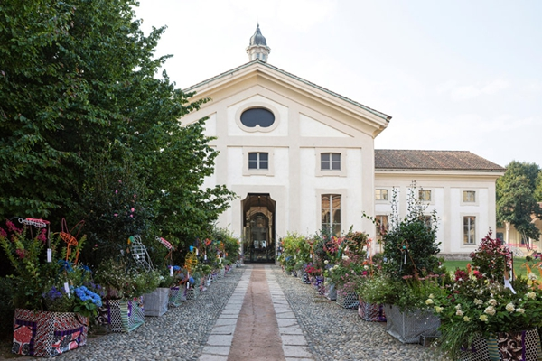
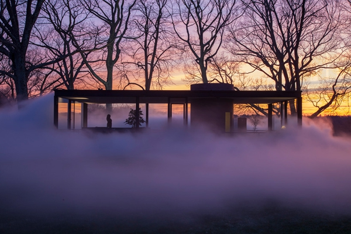
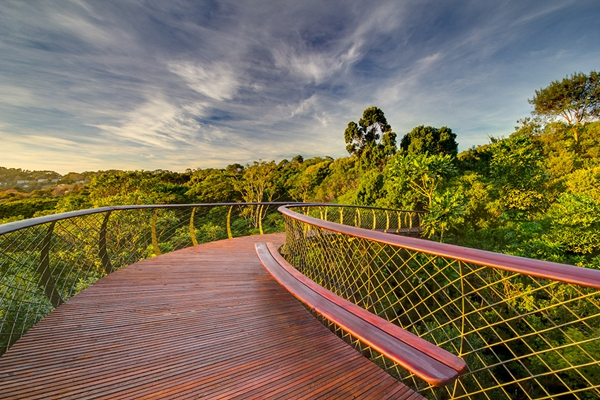

最新动态
园林设计的最终目的是要创造出景色如画、环境舒适、健康文明的游憩境域。一方面，园林是反映社会
意识形态的 空间艺术，园林要满足人们精神文明的需要…

2014年米兰设计周：marni花卉集市
在米兰设计周期间，marni在非常具有历史意义的rotonda della besana场馆内举办了一场展览，包括...

日内瓦:“螺旋藻泉”培育花园
bureau A设计的“螺旋藻泉”构成了一种混合的形式，融合了蓝绿色高密度的藻类培植池和这座建于16世纪引人冥想的...

南非:“非洲树蛇”桥
康斯坦博西植物园内被亲切地称为“非洲树蛇”或“树冠走廊”的森林桥梁现面向公众开放，游客在这里可以欣赏到从森林地面到...